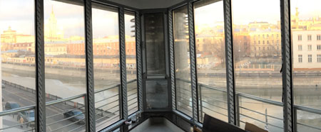

Продукция и услуги...
Материалом для изготовления дорогих качественных деревянных окон чаще всего служит древесина ценных пород сосна, лиственница или дуб, при производстве...
Алюминиевые окна, двери и витражи
Алюминиевые окна – один из самых надежных и долговечных способов остекления. Востребованность алюминиевых оконных конструкций объясняется ...
Безрамное остекление

В закрытом положении безрамная система остекления надежно защищает балкон от ветра и дождя, а уровень шума в помещении снижается на 15-20 дБ..
Раздвижные двери и окна. HS и PSK- порталы

Складные раздвижные двери (гармошка) предоставляют возможность открывать остекленные фасадные проемы больших площадей, тем самым, похожи на трансформируемую стену..
Витражи художественные
Современные технологии производства фасадных конструкций и безграничные возможности сочетания и компоновки различных стилистических элементов, подарили дизайнерам способность воплощать в жизнь самые...
Зимние сады
Первые упоминания о системах зимних садов относят ко временам Римской Империи, когда капризные патриции, обладающие высоким художественным вкусом, могли наслаждаться цветением экзотических тропических растений не выходя из дома...